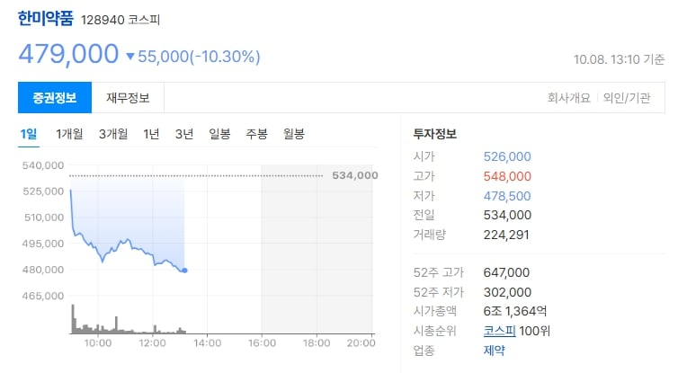

에페는 한국인 비만 성인을 대상으로 한 임상 3상 시험에서 40주 동안 평균 약 9%~9.75%의 체중 감소 효과를 기록했다고 한다.

오늘 한미약품 주가가 에페 40주 평균 감량률과 비슷하게 빠졌다.
살도 빼고 주식도 빼는 확실한 다이어트 진행 중
에페는 한국인 비만 성인을 대상으로 한 임상 3상 시험에서 40주 동안 평균 약 9%~9.75%의 체중 감소 효과를 기록했다고 한다.

오늘 한미약품 주가가 에페 40주 평균 감량률과 비슷하게 빠졌다.
살도 빼고 주식도 빼는 확실한 다이어트 진행 중
주식을 줄이면 살이 빠집니다.
밥사먹을 돈이!!
통장 잔고가!! 아자자자자자자자자작!!!!!!!!!!!!
가격만 싸게 나오면 비급여 당뇨약 수요나 유지용 저렴이 주사로는 아마 쓰지 않을까
3만원대 아니면 그돈씨임
망한거
저 돈이면 위고비 나눠맞기 못이김
유지용 위고비 나눠맞기하면 한달에 15~18만원 나옴
그냥 ㅅㅂ 마운자로나 싸게 내놓으라고
가격문제가 아닌거 같은게 효과가 있어야 맞는건데 40주에 9프로면 거의 1년해서 100키로가 9키로 빠진거 아닌가..
안맞은 대조군보단 확실히 많이 빠지긴 함 다만 위고비마운자로 맞으면 저것보다 두배는 더 빠지니 가격이라도 엄청 싸면 유지용으로 맞기라도 할 의미가 생기긴함
위고비는 68주 해서 14.9%
1주 당 체지방 감소율 따지면 에페나 위고비나 별 차이없음
가격만 싸게 잘나오면 경쟁력 있을듯
흠.. 마운자로 하고 있는 입장에서는 그냥 마운자로 제재나 풀어줬으면 좋겠음
내 몸으로 테스트 해보고 싶진 않으니
마운자로는 위고비랑 에페 같은놈들보다 훨씬 효과좋아서 이미 마운자로 하고있으면 쟤네들은 고려안해도 됨.
이것때문에 지금 나라에서 해외산 마운자로 통제하고 국내 가격도 통제하는거지?
약효를 스스로 검증
성능 확실하구만 아주 쫙쫙 빠지고있어
주식을 사면 입맛이 없어지긴 하겠다
에페? 에페드린 계열인가?
에페드라쪽 계열이면 저거보다 많이 빠질건데 감기약만 하더라도 25mg 들어가는 성분인데 그것보다 더 미미하게 들어가있거나 아예 다른 성분일거같다
펜싱 계열임
요 며칠 한미약품 엄청 올랐다고 그러더니ㅋㅋ
성능 보니 많이 싸야겠는데
아구창 의사가 10만원 미만이면 바꾼다했음
오 권위있는 분이 그렇게 말씀하시니 믿음이 가네. 나도 10만 미만이면 저걸로 입문해봐야겠다
생각있고 금전이 부담이면 위고비 나눠맞기나 해라 10만원도 아깝다
감량이 필요할땐 마운자로 맞고 유지할때 저거 맞는 방식으로 해도 될거같은데 어차피 평생 맞는다 생각한다면
업계에서 10만원 중반대 예상하더라
마운자로 가격 안내리면 저딴걸 그돈주고 사야하네 ㅋㅋ
아래영상에선 싸도 안바꾼다던데?
마운자로 하고있어서 바꾸면 오히려 살찔가능성높다고 안바꾼데
https://youtu.be/Mz6HBSvuMp0
주 10만임?
김치자로는 명텐도 시즌2였고..
이거때매 마운자로 직구 막고 가격 안내린거임?
지금 마운자로가 온누리멕이면 35-6인데 젤많이맞는 5mg가
효과가 1/2인데 가격이 17-18이지랄하면 누가맞냐 9-10으로나와야 팔릴거같은대. 그냥 마운자로 떨어지는거 존버하는게 나을듯
떨어지긴 하려나 좆같은 김치국 씨바꺼 ㅠㅠ
5만원하면 잘팔림
망했으니까 이제 마운자로 가격좀 내리라고
조선자로 연전연승은 대체 언제볼수있는거냐 ㅋㅋ
살을 빼라 했더니 주식을 빼고 있노